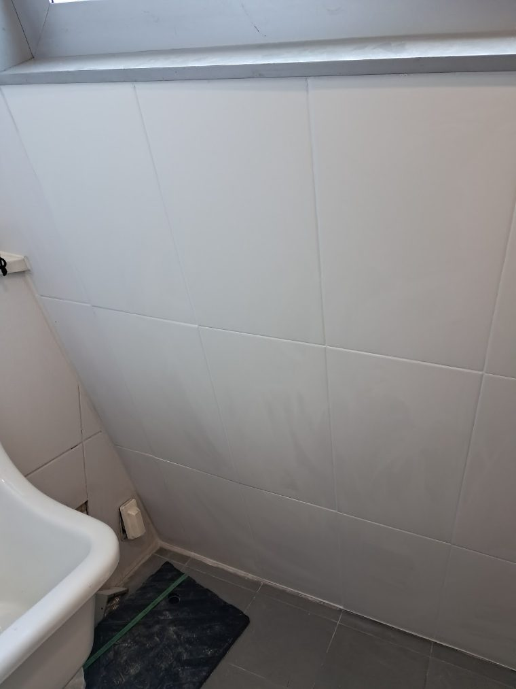
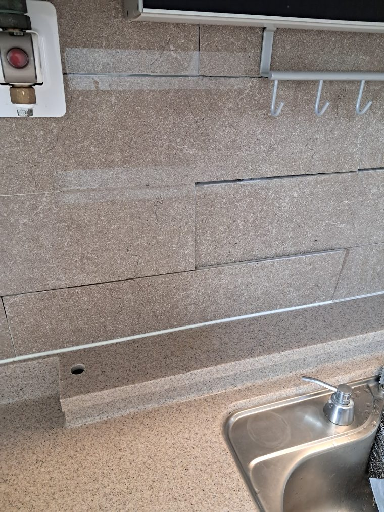
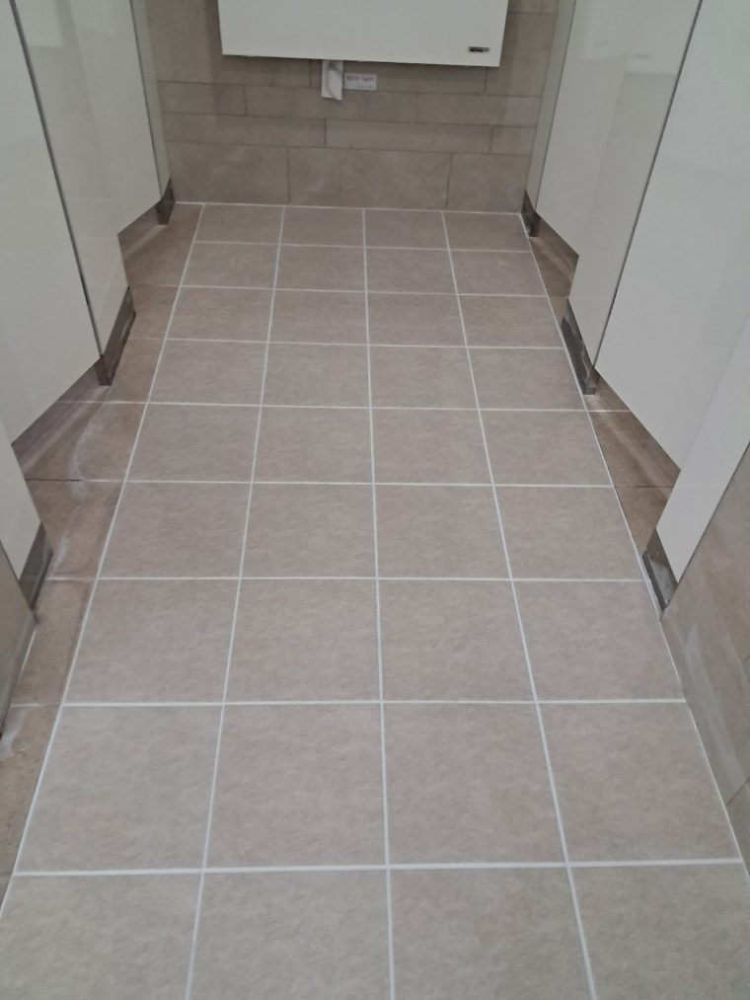
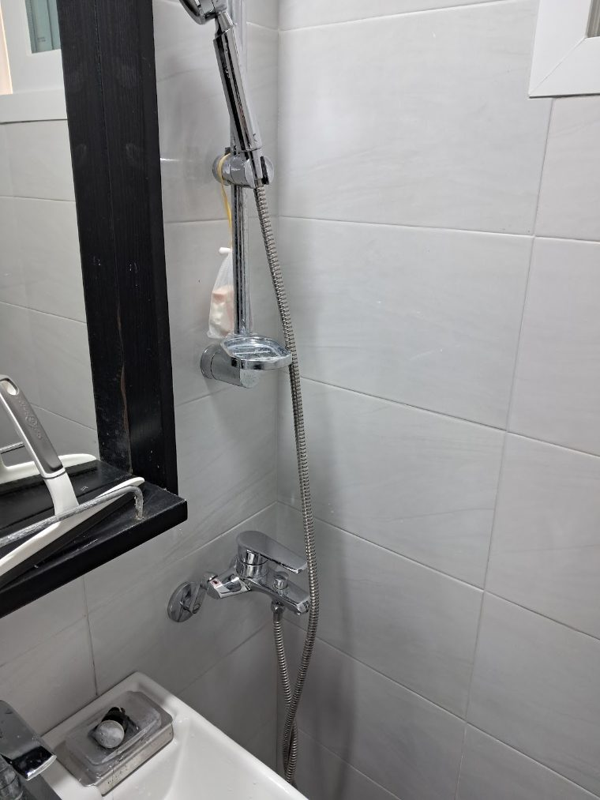
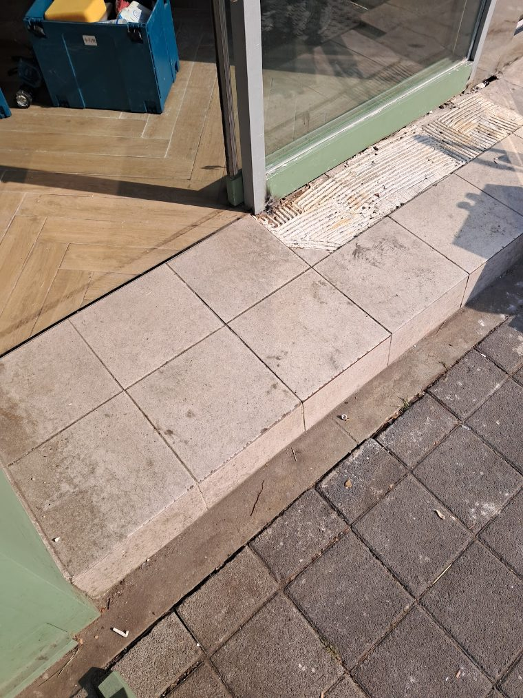

BEFORE · AFTER대표 직접 시공


벽
한두 장 깨진 걸로 불러도 되나 망설이시나요?
작은 타일 한 장이라도
정성을 다해 보수해 드립니다.


깨지거나 들뜬 곳이 어디인지 그림에서 눌러 보세요.
장소마다 자주 생기는 증상과 견적용 사진 찍는 법을 바로 알려드립니다.
타일이 깔린 곳을 누르면 장소별 안내로 이동합니다
아래 버튼을 누르면 이 장소의 실제 작업 전후 사진을 볼 수 있습니다
비교 현장화장실 타일 보수, 깨진 타일 교체, 들뜬 바닥타일 보수까지 제가 작업한 현장을 작업 전과 작업 후 그대로 찍어 남깁니다.
카드의 "작업 전 / 작업 후" 버튼을 눌러 비교해 보세요.











휴대폰으로 문제 있는 타일 1장, 주변이 다 같이 보이게 넓게 1장을 찍어 010-2900-8802로 보내주세요.
PAPA JANG'S
아빠의 마음으로, 내 집처럼 꼼꼼하게 작업하겠습니다.
아들 키우는 아빠가 되고 나서, 우리 집은 제 손으로 지킨다는 생각으로 삽니다.
그래서인지 깨진 타일이 보이면 그냥 지나치질 못합니다.
아이가 밟다가 다치진 않을까, 틈으로 물이 스며들진 않을까 걱정부터 앞섭니다.
손님 댁에 가도 마음은 똑같습니다.
그 집에도 매일 그 화장실을 쓰고, 그 현관을 지나다니는 가족이 있으니 대충 할 수가 없습니다.
그래서 상담부터 시공까지 제가 직접 하고, 마무리까지 확실하게 제 손으로 작업하고 나옵니다.
언제나 아빠의 마음으로 내 집처럼 꼼꼼하게 작업하겠습니다.
- 파파장스
주변 타일이 단단히 붙어 있으면 전체 공사 없이 문제 있는 타일만 보수 및 교체 가능합니다.
다만 옆 타일까지 들떠 있으면 같이 손봐야 해서, 작업 전에 주변 상태를 꼭 확인합니다.
타일 한 장이라도 위치와 주변 상황, 작업 난이도에 따라 비용이 달라 정해진 가격표가 없습니다.
사진을 보내주시면 꼼꼼히 보고 최대한 바로 견적을 드리고, 사진으로 어려우면 직접 방문해서라도 최소 견적을 맞춰드립니다.
같은 타일은 아파트·빌라 관리사무소나 댁에 따로 보관해 둔 타일이 있을 때만 쓸 수 있습니다.
보관해 둔 타일이 없으면 같은 타일은 구할 수 없어서, 거래처를 통해 최대한 비슷한 타일을 찾아 맞춥니다.
서울·경기 전 지역 출장 가능합니다.
경기 근교는 예약하시면 일정을 맞춰 방문합니다.
네. 대표인 제가 직접 상담하고 시공까지 합니다.
타일 보수가 중심이고, 음식물처리기 철거와 샷시 구멍 복원도 상담 가능합니다.
문제 있는 타일 1장, 주변이 다 같이 보이게 넓게 찍은 사진 1장이면 충분합니다.